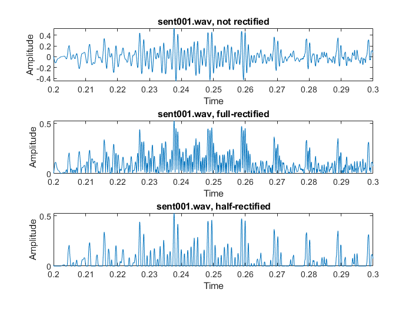
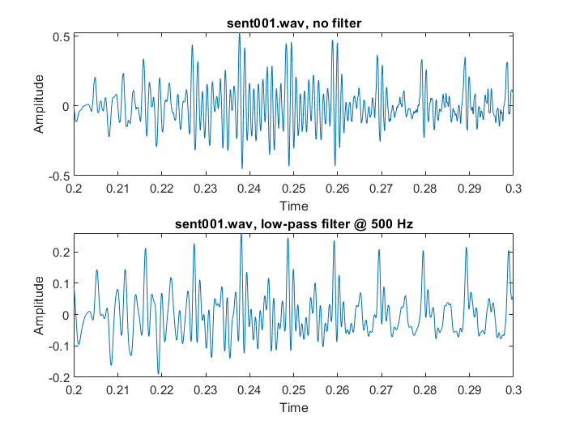
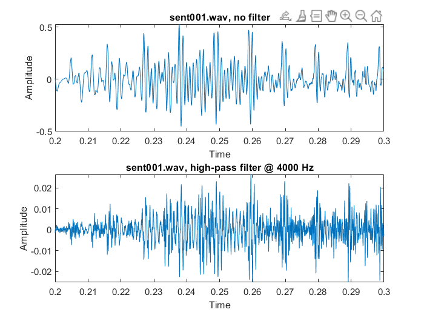
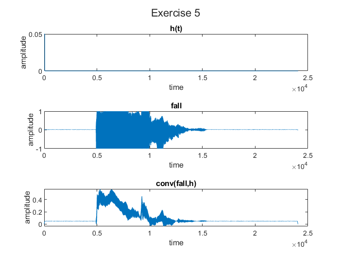
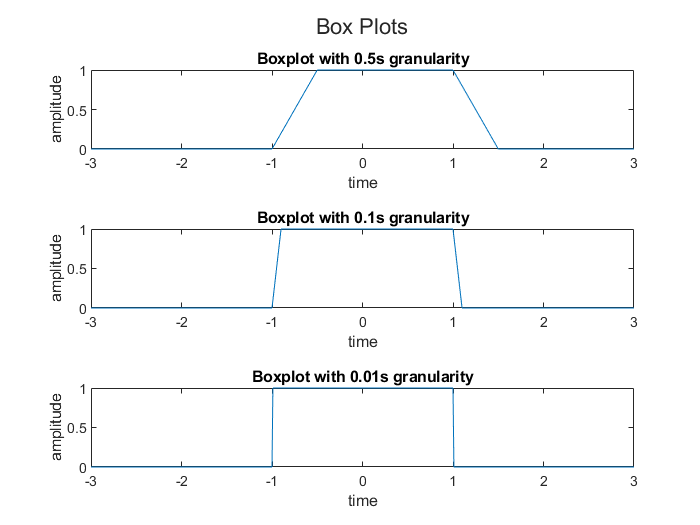

The lab introduces the concepts of rectifiers, filters, and convolutions. A rectifier is combined with a low-pass filter to extract the envelope of an audio signal. And a signal is convolved to filter out high frequencies.
The fully rectified signal sounded like a duck. There was a weird ringing sound at the end too.
The half rectified signal sounded a little weird, but not too abnormal.

After running sent001.wav through the 500 Hz low-pass filter, the audio gave a distorted, coming-from-another-room sound.
The filtered signal looks smoother than the original signal.

Here is the magnitude and phase response of the filter. As you can see, the filter assigns more weight to lower frequencies. But high frequencies are attenuated.
The high-pass filtered signal sounded quiet but very sharp. It was as if someone was whispering while stressing all s.
The filtered signal looks noisier than the original signal.

Here is the magnitude and phase response of the filter. As you can see, the filter assigns more weight to higher frequencies and attenuates lower frequencies.
The lower the frequency cutoff the smoother the envelope and vice versa.
We used full-rectification. This means that though we used 20 Hz for our filter, we might be cutting off frequencies that are bigger than 10 but less than 20. As you know, full-rectification can cause the frequency of some signals to be doubled. This would cause frequencies that are originally in the range of [10,20] to be in the range of [20,40] and be attenuated.
We couldn’t hear the 5, 20, and 50 Hz envelopes but the 500 Hz one sounded like a movie alien.
It seems there is a copy of the x(t) in the output for every 1 in h(t). If the coefficient in x(t) is not one, then the output copy will be scaled by the coefficient.
Thus, when the second coefficient is changed from 0.5 to -0.5, the corresponding echo in the output was reflected across the x-axis. Please compare the two images below.
In this image, the second coefficient of h(t) is 0.5.
In this image, the second coefficient of h(t) is -0.5 which caused the second echo of the input to be reflected across the x-axis.
The convolved signal sounded muffled and masked: quieter and somewhat dull. Apparently, this impulse response acts as filter so that may be why.

The convolution output really looks smoother (and missing data). It has shallower edges. It never goes below zero and the range of the output is around (0.39,0.55) compared to the input’s greater range of (-1,1).

Yes, the difference between the three signals is only the slope of the rising and falling portions of the box. It seems the plot function draws points on the graph and then it connects the points with straight lines.
Since the data instantaneously rose, the slope is the rise over the step width: the smaller the step, the more steep the edges. It is hard to visually notice any difference when the step size is less than 0.01, though.
Here are the box plots from exercise 8.

In this exercise, the output had to be multiplied by the step size to get correct output values. This is because the convolve function was designed to work with discrete data so when two numbers are multiplied the width is assumed to be one and so the area is assumed to be value of the multiplication.
In our case, we are representing a continuos signal in a discrete array. So while the indices are of size 1, the step size (width) is only 0.001. So the output must be multiplied by the step size to correct the signal. If this correction was not in place, the output would go up to 2000.
The output takes 2 seconds (-1,1) to rise from 0 to 2. This closely matches the theory. The output then remains at 2 for (1,3) and decreases to 0 again during (3,5). Again, this matches the theory.
Through visual inspection, the function behaves exactly as the theory when the granulation is small enough and the step size is accounted for. If we zoom into the plot, we will find that it doesn’t rise at exactly -1 and some other inconsistencies. However, these inconsistencies can be mitigated by increasing the granulariy (smaller steps).
Exercise 1 demonstrated the use of abs() to create a full rectifier, and max() to create a half rectifier. Exercises 2 and 3 use butter() and the Nyquist frequency to create low-pass and high-pass filters at any given real cutoff frequency. Exercise 4 composes a full rectifier together with a low-pass filter to extract the envelope from an audio signal.
Exercises 5 and 6 showed how to use discrete signal convolutions in matlab and how they can be used as signal filters. Exercises 7, 8, and 9 demonstrated how to make box signals in matlab and how to make the edges of the signals as steep as possible. Exercise 10 demonstrated how to convolve continous signals even though they are discrete signals in matlab.